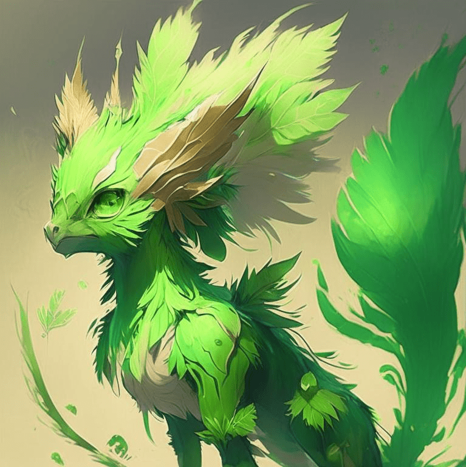

Радиоактивный фенёк - самый древний обитатель ТехноТерры. Появился он здесь, как говорят ученые из метеорита. Ходят слухи, что именно они зародили здесь жизнь.

Радиоактивные феньки в жизни участников экспедиций:
Они очень дружелюбные и если видят человека сразу бегут к нему.
Прикасаться к ним можно только через специальные перчатки, чтобы не получить огромную дозу радиации.
Так же их можно использовать, как своеобразный генератор.
Ночью светится.
Назад